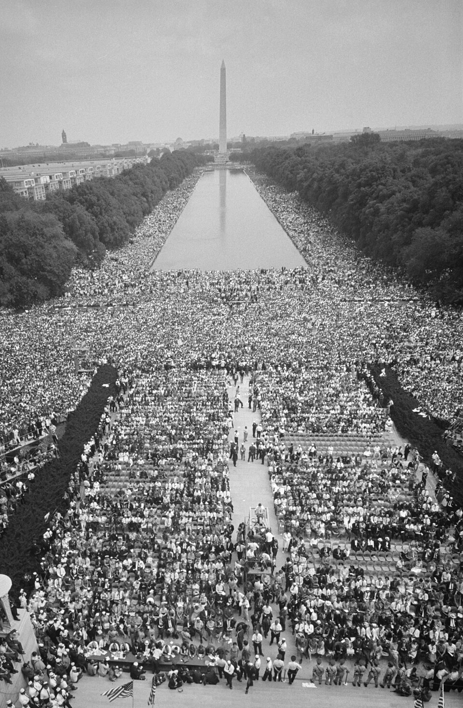

Un cuarto de millón de voces reclama en Washington el fin de la segregación
Ante el monumento a Lincoln, la mayor manifestación que recuerde la capital escuchó al reverendo Martin Luther King apartarse de su texto y hablar de un sueño. Cien años después de la emancipación, los negros norteamericanos reclaman los derechos que la ley les promete y la costumbre les niega.

Doscientas cincuenta mil personas, venidas en trenes, ómnibus y caravanas desde todos los rincones del país, colmaron hoy la explanada que va del obelisco al monumento a Lincoln en la mayor manifestación que haya visto la capital. Negros y blancos marcharon juntos, con trajes de domingo bajo el sol de agosto, cantando himnos y portando carteles que pedían trabajo y libertad. No hubo un solo incidente grave: la jornada transcurrió con una disciplina que asombró a la policía, que había concentrado miles de agentes. Al caer la tarde, un predicador de Atlanta, el reverendo Martin Luther King, pronunció el discurso que la multitud no olvidará.
King llevaba un texto escrito, pero en mitad del discurso lo abandonó. Cuentan que la cantante Mahalia Jackson, que había actuado minutos antes, le gritó desde atrás: «¡Cuéntales del sueño, Martin!». Entonces el predicador alzó la voz y repitió, como un estribillo que la multitud coreaba, las palabras «Tengo un sueño»: el sueño de que sus cuatro hijos pequeños sean juzgados algún día por su carácter y no por el color de su piel, el de que los hijos de esclavos y los hijos de quienes los poseyeron se sienten juntos a la misma mesa. Cuando terminó, la explanada entera parecía una sola garganta.
La marcha, organizada por el veterano sindicalista A. Philip Randolph junto a las grandes asociaciones de derechos civiles, llega en un año encendido. Este 1963 se cumple un siglo de la proclama con que Lincoln emancipó a los esclavos, y sin embargo en los estados del sur rigen todavía las leyes de segregación: escuelas, ómnibus, fuentes de agua y urnas separadas. Las campañas pacíficas de Birmingham, reprimidas con perros y mangueras ante las cámaras, conmovieron al país entero. El presidente Kennedy envió en junio al Congreso un proyecto de ley de derechos civiles que los legisladores sureños prometen resistir; la marcha de hoy viene a empujarlo.
La jornada dejó estampas para la memoria: familias enteras refrescándose los pies en el estanque frente al monumento, veteranos de guerra con sus condecoraciones, pancartas escritas a mano en graneros del sur. Los oradores se sucedieron durante horas, y los organizadores fueron recibidos luego en la Casa Blanca. Este diario no puede dejar de anotar una coincidencia del calendario: un 28 de agosto, hace exactamente ciento treinta años, tituló la sanción de la ley con que Gran Bretaña abolió la esclavitud en su imperio. La historia, que suele ser distraída, tiene a veces estas puntualidades: la libertad volvió a citarse un 28 de agosto.
Nadie que haya visto la explanada de hoy puede creer que este movimiento vaya a detenerse. No hubo amenazas ni puños en alto: hubo himnos, y esa mansedumbre organizada resultó más imponente que cualquier desfile armado. El diario cree que los Estados Unidos escucharon hoy una interpelación que ya no podrán desoír: un décimo de sus ciudadanos reclama, con las palabras de sus propios fundadores, la parte de promesa que se le adeuda desde hace un siglo. La ley que espera en el Congreso dirá si el sueño del reverendo King encuentra cauce en las instituciones o si deberá seguir aguardando su hora.